Track Time.
Get Paid.
Cruxy is a simple, easy to use app to track your time, invoice your clients, and see what you've earned.
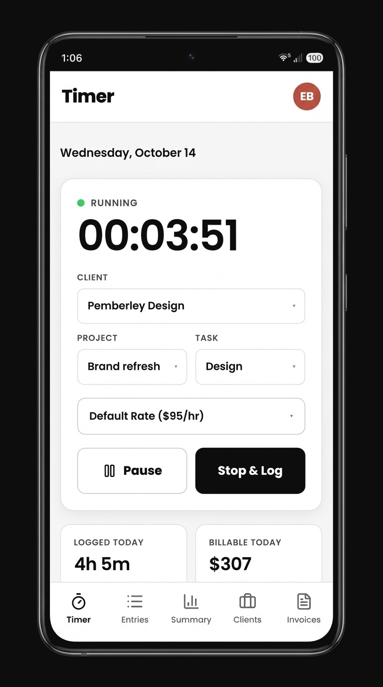
Built for you, not for large teams.
Most time trackers are built for teams, and many are priced per seat. You end up paying for features and reports you never use, just to log your own hours.
Built for a team of one. No per-seat pricing, no workspace admin. Just clients, projects, tasks, and invoices, set up in seconds with nothing to get in your way. And it's free to get started.
Everything a freelancer needs.
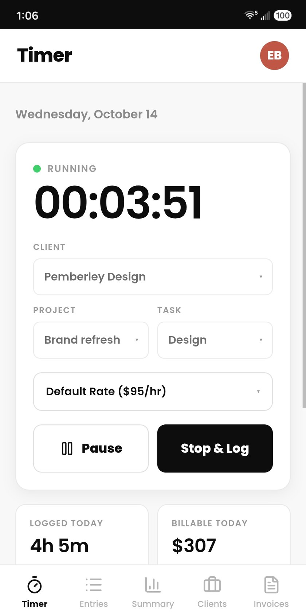
Start tracking in seconds
Pick a client, project and task, and go. Pause and resume any of the day's entries.
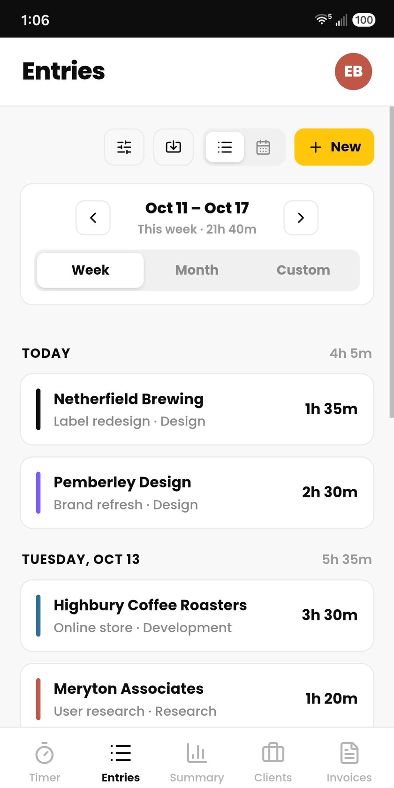
Every minute, accounted for
Filter entries by client, edit anytime, and export to CSV. Forgot to start the timer? Add an entry manually.
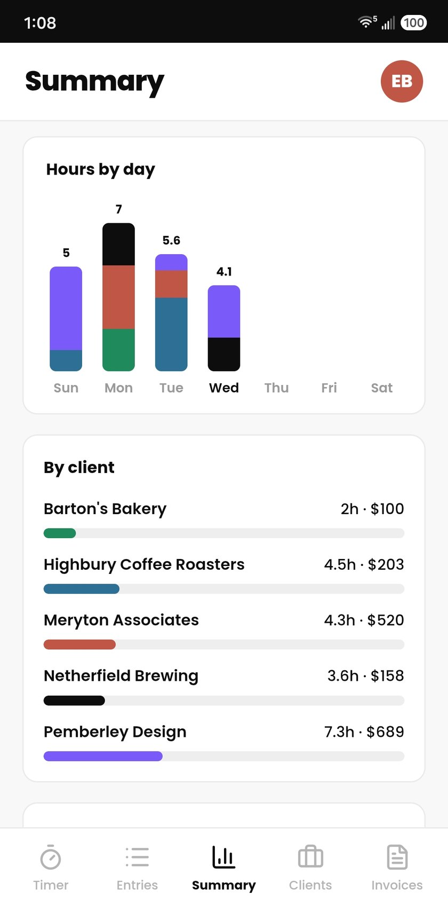
View earnings at a glance
See any period's hours and earnings, for a single client or many. Then download a PDF work summary.
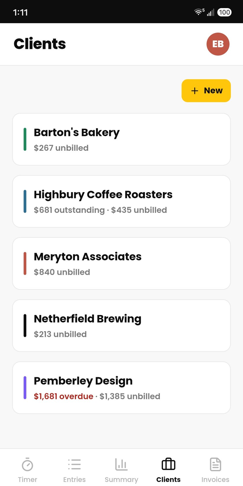
Customize each client
Set different hourly rates and projects for each client. Rate changes don't affect past earnings.
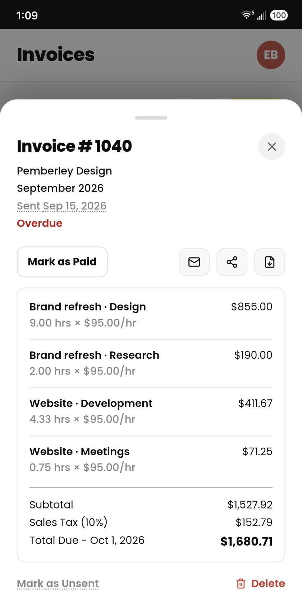
Invoice in a few taps
Turn unbilled time into an invoice, send it from the app, and mark it paid. Overdue invoices are flagged so nothing slips.
Invoice your clients in minutes, not hours.
Pick a client and period, then generate an invoice in one tap. Review it, send it, and mark it paid, all without leaving the app.
- More than just hours. Include fixed fees, expenses, and retainers in one invoice.
- Set it up your way. Set a tax rate, discount, payment terms, and a personal note on every invoice.
- You send it, Cruxy tracks it. Email the PDF right from the app, and see what's sent, paid, or overdue across every client.
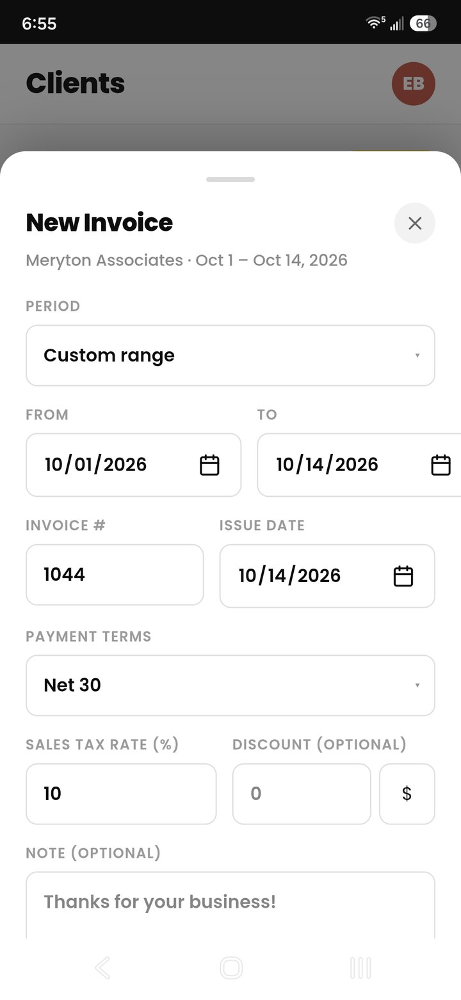
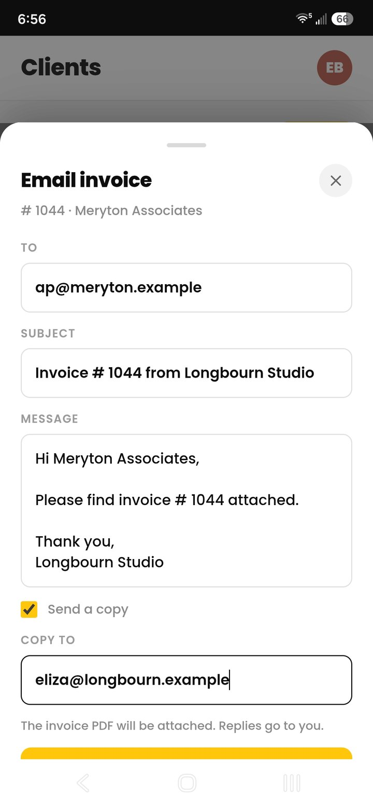
Steady work, planned and on budget.
Set a fixed fee once and bill it on schedule. Give a project a budget in hours or dollars and see what's left as you track time.
- Custom retainers for each client. Weekly, biweekly, monthly, or quarterly fixed fees, added to your next invoice. Pause or end one any time.
- Budgets that keep you honest. Budget a project in hours or dollars and watch the bar fill as you log time.
- Rollover for unused hours. Unused hours carry into next month, up to one month's worth.
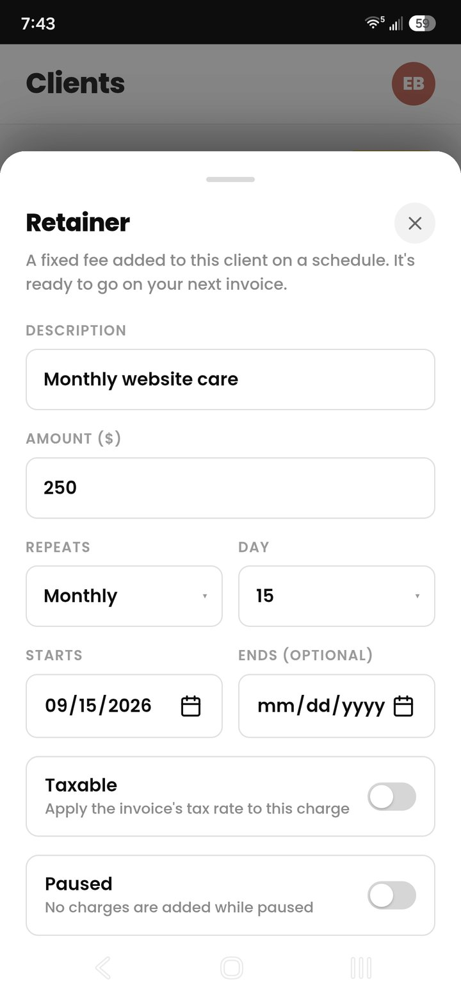
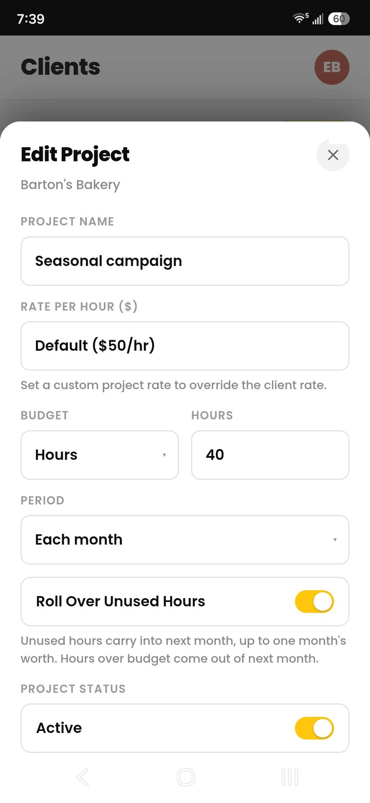
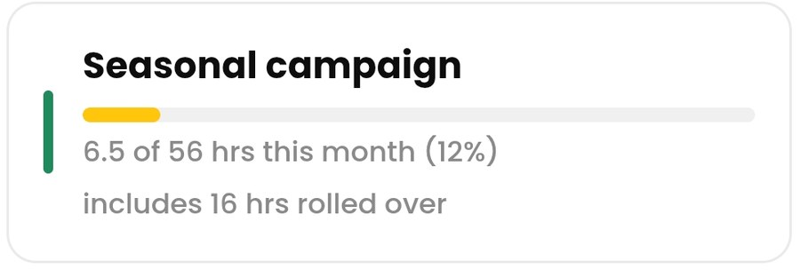
Get paid faster.
Cruxy flags overdue invoices the moment they slip, and on Pro it follows up with your client for you, on a schedule you set.
- Overdue alerts. Get an email the day an invoice goes overdue, with follow-ups at 1 week, 30 days, and 60 days.
- Client reminders. Cruxy emails your client in your business name when an invoice is overdue, and tells you who’s been reminded. (Pro)
- Time-logging reminders. Pick the days and the hour, and get an email if you haven't logged any time yet.
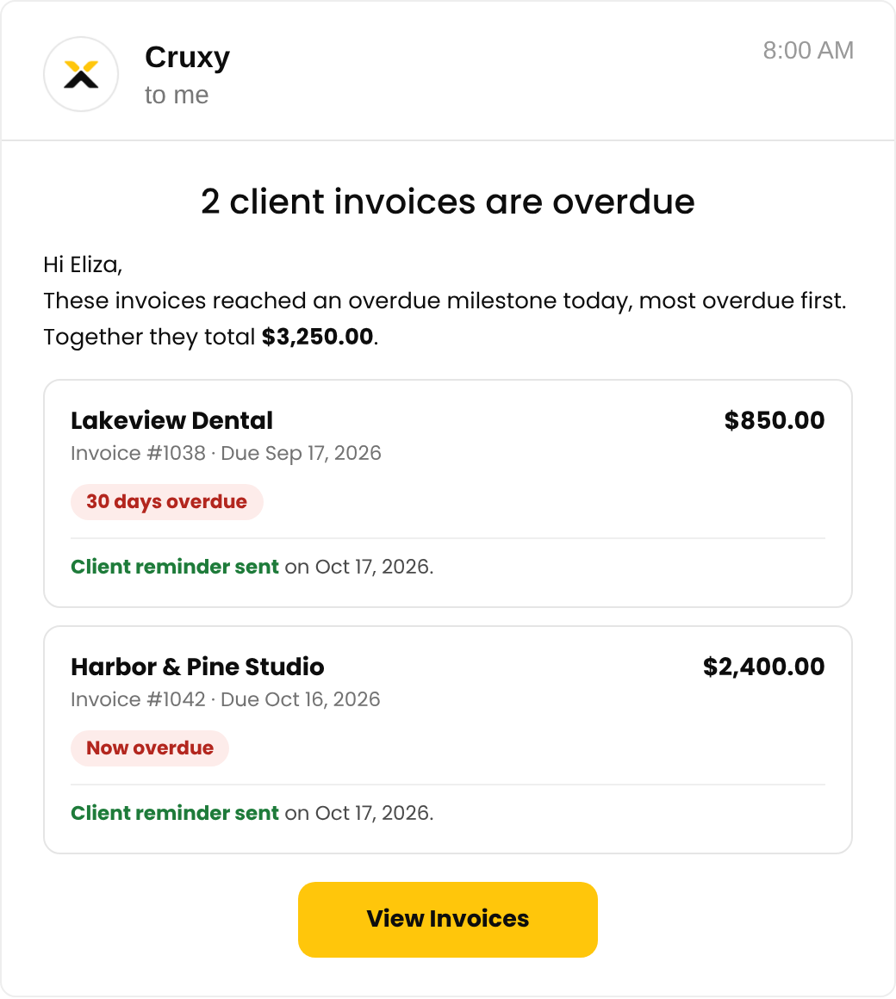
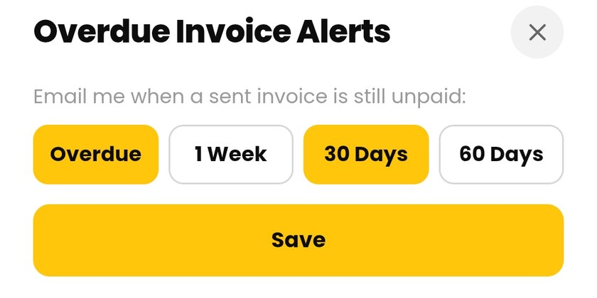
Switching? Bring your history with you.
Upload a CSV from Clockify, Toggl, or Harvest. Cruxy imports all your clients, entries, and rates, and can mark them as invoiced or not.
- Review first. See every client, with its entries and hours, before you confirm.
- No double counting. Entries you already have are skipped, existing clients are matched, and new clients are added for you.
- Free on every plan. Import as much history as you like.


Start free. Upgrade when you're ready.
- 2 active clients
- Unlimited projects and tasks
- 3 emailed invoices or reminders a month
- Overdue invoice alerts
- PDF invoices and work summaries
- CSV import and export
- US-based support
Everything in Free, plus:
- Unlimited active clients
- Unlimited emailed invoices
- Automatic payment reminders to your clients
- Project budgets and tracking
- Monthly budget rollover
- Retainers for recurring fixed fees
- Invoices without the Cruxy footer
Real People. Real Support.
Cruxy is built and supported by a small team based in Northern Colorado. Email us and you'll get a quick response from a real person.
Questions, answered.
What do I get on the Free plan?
Free covers time tracking and invoicing for up to 2 active clients, and it never expires. You get unlimited projects and tasks, unlimited PDF invoices (3 emailed invoices or reminders per month), reminders to log time, overdue invoice alerts, CSV import and export, PDF work summaries, and US-based customer support. An active client is one you're currently working with. If you're not working on any projects for them, make them inactive and you can add another client. All their history is kept. You can still view and export it, and send or mark their invoices paid, but you can't log new time to them. Reactivate them whenever you like, but only 2 clients can be active at a time. Upgrade to Pro for unlimited active clients.
When should I go Pro?
Go Pro when you're working with more than 2 active clients, or when you want more. You get everything in Free, plus unlimited active clients, unlimited emailed invoices, automatic payment reminders to your clients, project budgets and tracking, monthly budget rollover, retainers, and invoices without the Cruxy footer, for $4.99 a month. No contract, and you can cancel anytime.
Can I send invoices from Cruxy?
Yes. Create a PDF invoice from your unbilled time and charges, then email it to your client right from the app. Free includes 3 emailed invoices or reminders a month, and Pro is unlimited. You can always download or share the PDF and send it yourself.
Can Cruxy remind my clients about overdue invoices?
Yes, with Pro. Cruxy emails your client for you when a sent invoice is overdue, in your business name, on the days you choose. On every plan, Cruxy emails you when an invoice goes overdue so you can follow up yourself.
Does Cruxy collect payments from my clients?
No. Your invoice shows your own payment instructions, such as bank details or a payment link, and you mark it paid when the money arrives.
Can I set different payment terms for each client?
Yes. Choose Due on receipt, Net 15, Net 30, Net 45 or Net 60 as your default, then change it for any client. Currency, tax rate and time rounding can be set per client too.
Can I bill a retainer?
Yes, with Pro. Set a weekly, biweekly, monthly, or quarterly charge for a client, and each one shows up ready to add to your next invoice.
Can I switch from another time tracker?
Yes. Upload a CSV from Clockify, Toggl, or Harvest and Cruxy imports your clients, entries, and rates, and can mark time as already invoiced. You review everything before you confirm, and entries you already have are skipped. Import is free on every plan. If you have more than 2 clients on Free, the extras come in as inactive so you can choose which to keep active, or go Pro.
What happens if I change a client's rate?
Your past earnings don't change. Each entry keeps the rate it was logged at, so a new rate only applies to new entries. You can also switch any single entry to the current rate when you edit it.
Can I use it on more than one device, or offline?
Yes. Sign in on any device and everything is there, and a running timer follows you: start it on your phone and stop it from your computer. You can log time offline too. Entries are saved on your device and sync when you're back online. Editing or deleting entries needs a connection.
Can I export or delete my data?
Yes. Export any date range from the Summary tab as a CSV of your entries or a PDF summary. You can also delete your account anytime from Settings, which permanently deletes your data.
How do I cancel Pro?
Pro is a monthly subscription with no contract. Open Settings, tap Manage Subscription, and cancel there. You keep Pro until the end of the period you've paid for.
Is my data secure?
Yes. Your entries and client data are encrypted in transit and at rest, and are never sold, and are shared only with the service providers that help run Cruxy.
Is there an iPhone or Android app?
Yes. Cruxy is on the App Store for iPhone and on Google Play for Android. It also works as a web app at get.cruxy.io: open it in Safari or Chrome, tap Share or the menu, then Add to Home Screen, and it opens like an app.
How do I get help?
Email support@cruxy.io and you'll get a quick response from a real person. The Help Center also has step-by-step guides for everything in the app.
Get started for free.
Set up your first client in under a minute. Get the app, or start free on the web.
We're here to help.
Have a question about Cruxy, need a hand getting set up, or found a bug? We'll get back to you within one business day.